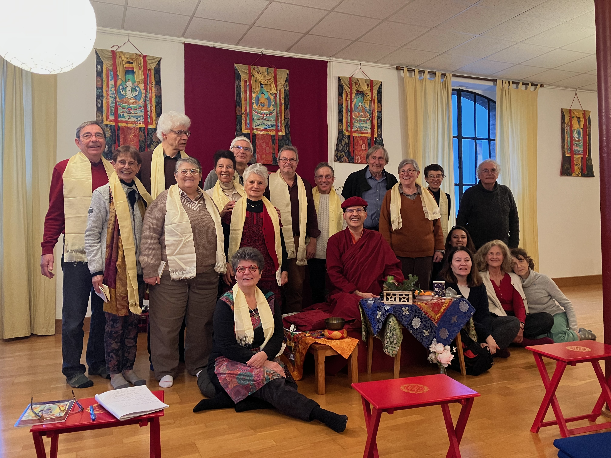
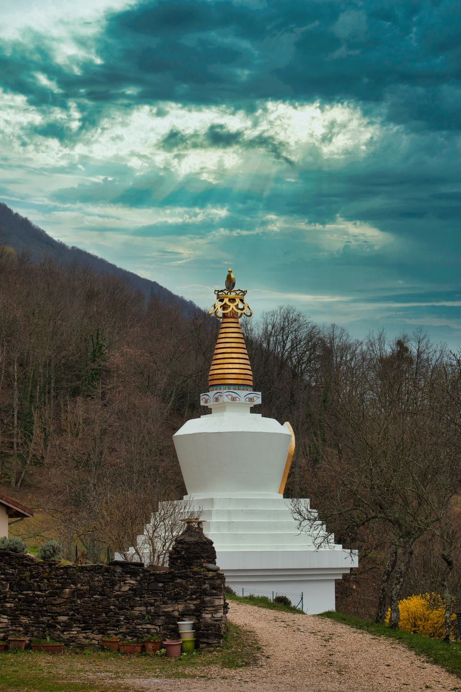
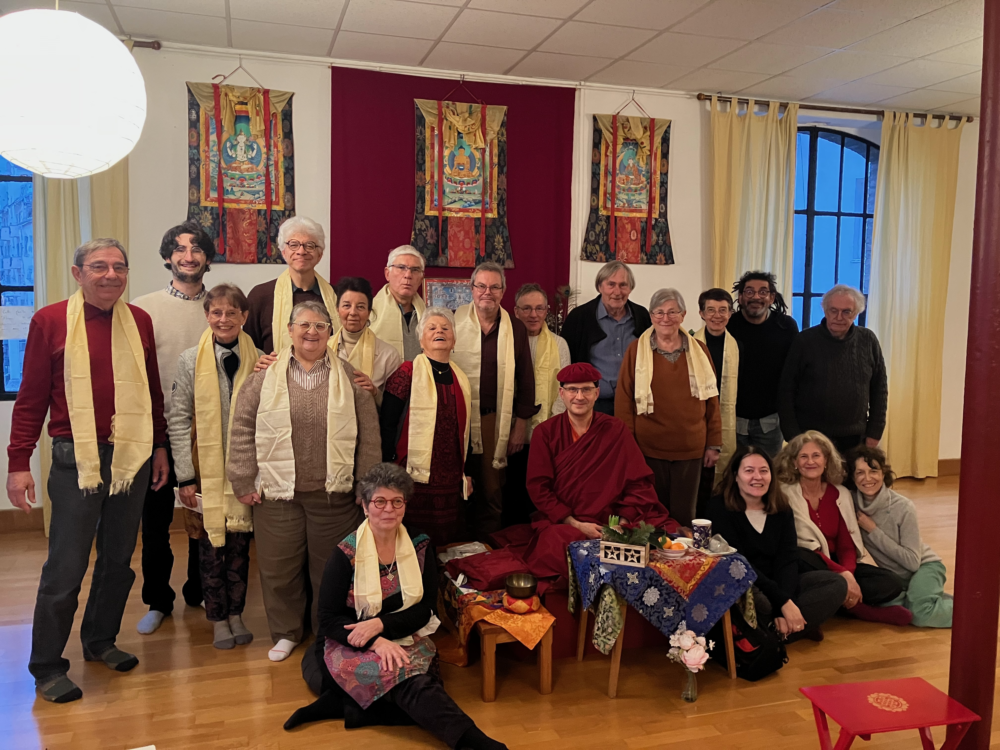
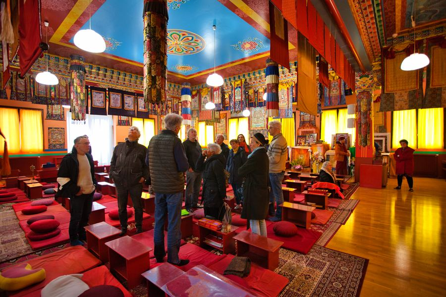

Chaque session est un espace de silence et de présence. Nous pratiquons la méditation silencieuse, le Soutra du Cœur, les visualisations et la récitation de mantras — accessibles à tous, débutants comme pratiquants expérimentés.
Lopön Thrinlé Tenzin, notre président, vient à Grenoble chaque trimestre pour guider nos pratiques et transmettre les enseignements du Dharma. Il assure également la traduction lors des venues de Drubpön Ngawang Tenzin, représentant de la lignée Drukpa en Europe, rendant ainsi ses enseignements accessibles à tous.

Sessions de méditation silencieuse, pratique du Soutra du Cœur, ouvertes à tous.
Visualisations, exercices respiratoires, récitations de mantras avec nos maîtres.
Journées méditatives en Belledonne, Chartreuse et retraites en lien avec Drukpa Plouray.
Colloques au Centre Théologique de Meylan et voyages interreligieux (Rome 2025, Montchardon 2026).
Cuisine, calligraphie, poésie, musique et balades méditatives — le bouddhisme vivant.
Actions altruistes bimensuelles portées par Cécile Dupart dans l'esprit du mouvement humanitaire.



Vous souhaitez participer à nos activités ou en savoir plus ?
Nous contacter